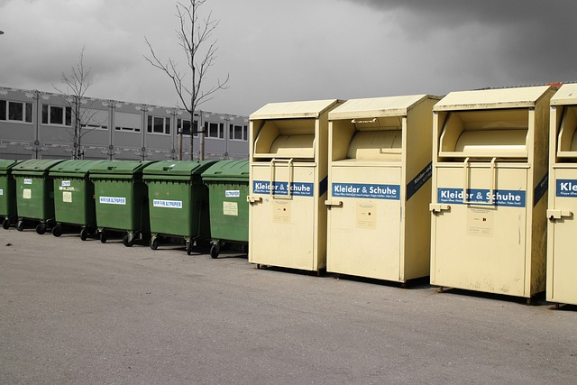

Reciclagem
Reciclagem: Transforme Resíduos em Recursos Valiosos
Bem-vindo à nossa página dedicada à reciclagem, onde cada ação conta para um futuro mais limpo e sustentável. Aqui na EcoHorto, acreditamos no poder transformador da reciclagem para proteger nosso planeta e preservar seus recursos naturais.
Por que Reciclar?
A reciclagem desempenha um papel crucial na redução do desperdício e na conservação de recursos preciosos, como água, energia e matéria-prima. Ao separar e reciclar nossos resíduos, podemos minimizar o impacto ambiental e promover um ciclo sustentável de uso de materiais.
Passos para Reciclar Corretamente:
Descubra como você pode fazer a diferença começando em sua própria casa ou empresa. Orientamos sobre os passos simples para separar, preparar e descartar materiais recicláveis de forma adequada. Desde plásticos e metais até papel e vidro, cada material tem seu processo específico de reciclagem que você pode aprender aqui.
Benefícios da Reciclagem:
Além de ajudar o meio ambiente, a reciclagem também traz benefícios econômicos e sociais. Ela cria empregos locais na indústria de reciclagem, reduz os custos de gestão de resíduos e contribui para uma comunidade mais sustentável e consciente.
Inovação e Tecnologia:
Explore as últimas inovações e tecnologias na área de reciclagem. De novos métodos de triagem a iniciativas de reciclagem criativa, estamos comprometidos em avançar as práticas de reciclagem para maximizar sua eficiência e impacto positivo.
Junte-se a Nós:
Inspire-se e participe da mudança. Descubra oportunidades de voluntariado, eventos comunitários e como você pode se envolver para promover uma cultura de reciclagem em sua região. Cada pequena ação faz a diferença!
Reciclar é o Futuro:
Juntos, podemos transformar resíduos em recursos e construir um futuro mais limpo e sustentável para as próximas gerações. Explore nossa página de reciclagem e comece sua jornada hoje mesmo.